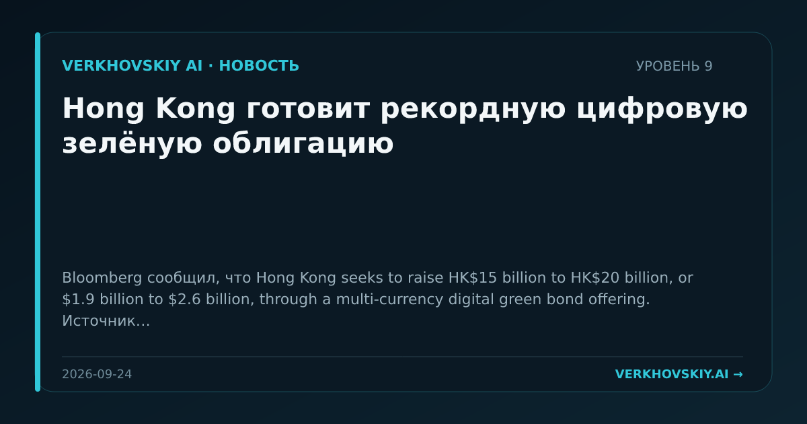

Hong Kong готовит рекордную цифровую зелёную облигацию
Bloomberg сообщил, что Hong Kong seeks to raise HK$15 billion to HK$20 billion, or $1.9 billion to $2.6 billion, through a multi-currency digital green bond offering. Источник называет размещение потенциально крупнейшим в мире в своём роде. Почему это важно: Цифровые облигации становятся инструментом позиционирования финансового центра, а не только пилотом распределённых реестров. Для СРТ это сдвиг денежного уровня в сторону технологически упакованных долговых инструментов.